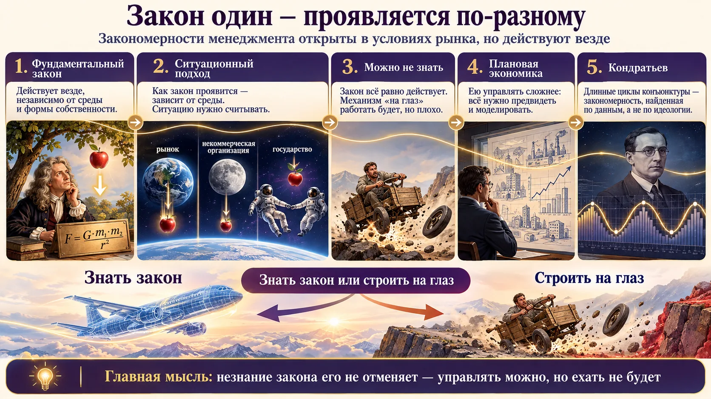
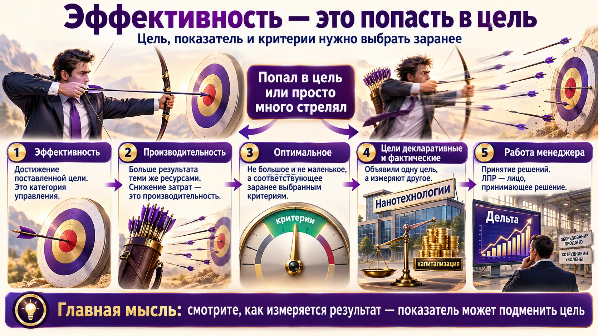
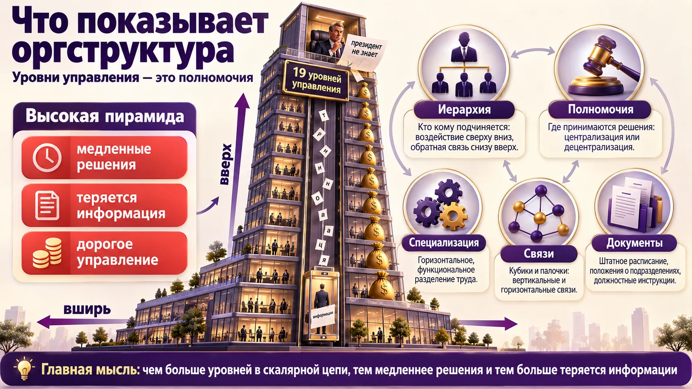
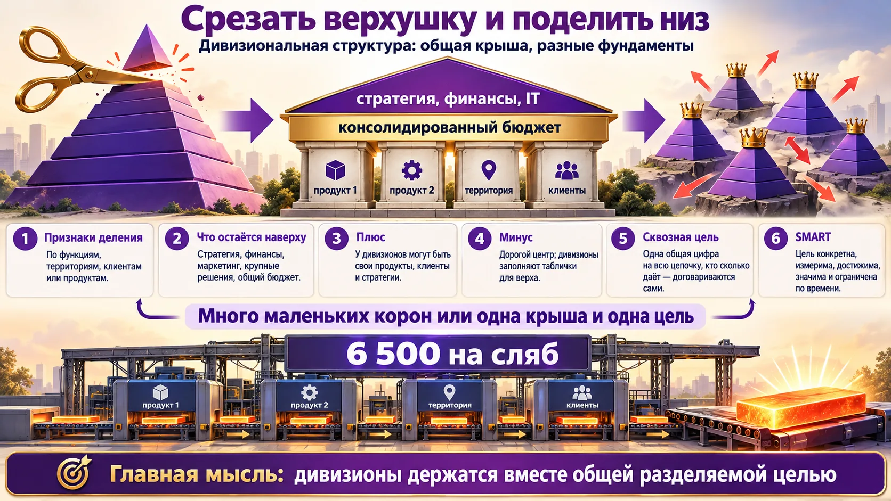
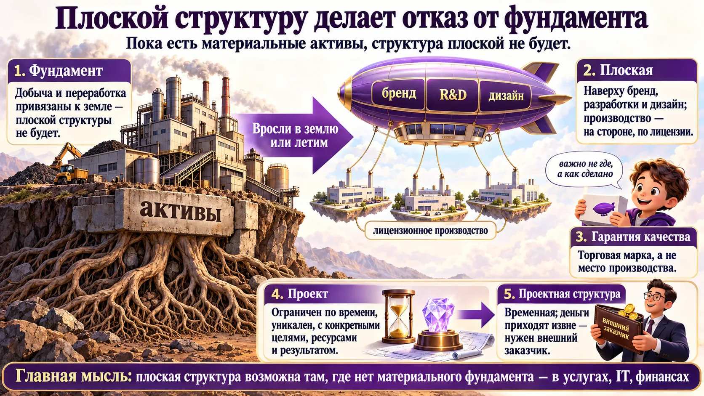
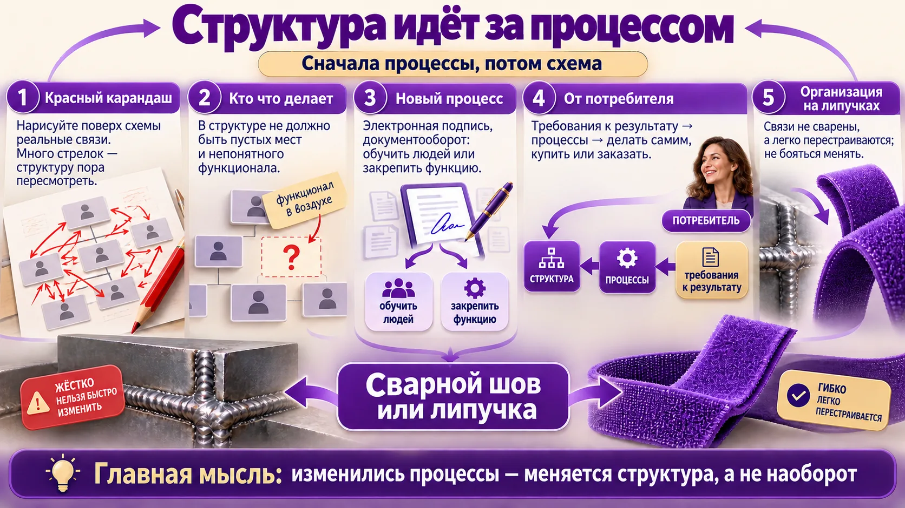
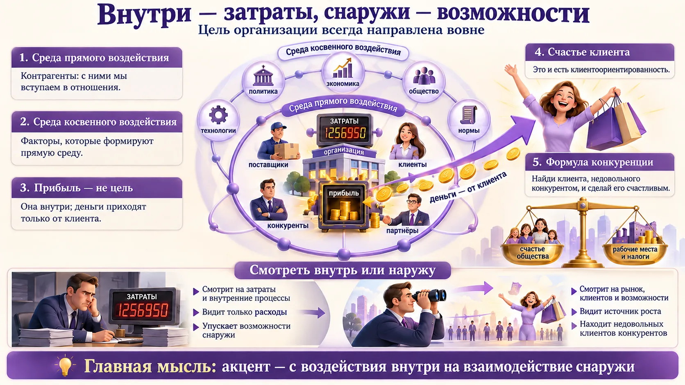
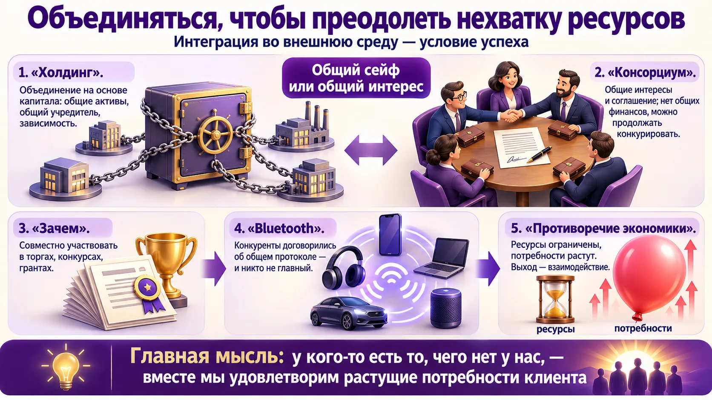
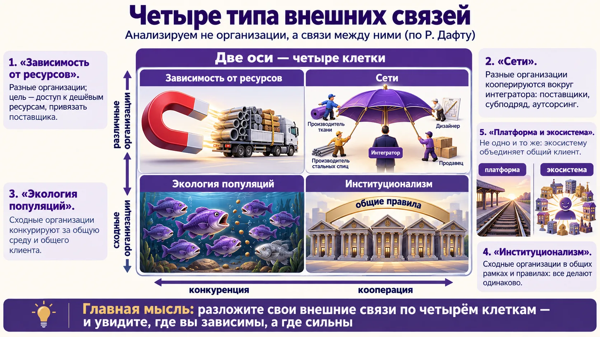
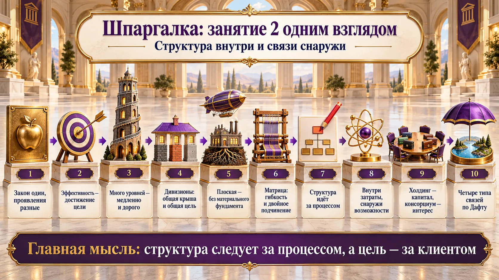

Закон один — проявляется по-разному
Менеджмент изучает организацию в условиях рынка. Но его закономерности работают и в некоммерческих организациях, и в государстве. Преподаватель объяснила это на примере из физики.

Тяготение действует везде
Закон всемирного тяготения действует на Земле, на Луне и в космосе. Это фундаментальный закон, но проявляется он по-разному: зависит от масс, которые рядом. На Земле мы все притягиваемся к Земле. Вдали от неё двое будут притягиваться друг к другу («расскажите это всем, у кого конфликты в семье»).
Законы менеджмента тоже
Классический менеджмент — это управление организацией в условиях рынка. Но его закономерности общие: они действуют независимо от среды и формы собственности. В госуправлении есть и стратегическое, и проектное управление: почти в каждой госпрограмме. Как именно закон проявится, зависит от ситуации. Её нужно считывать.
Плановой экономикой управлять сложнее
Нужно всё планировать и предвидеть, нужны огромные модели. В рынке проще: «сейчас поглядим и сделаем». Лучший советский опыт изучили и японцы, и китайцы. «Никто не пренебрегает в управлении тем, что может повысить его эффективность».
Кондратьев и длинные циклы
Н. Д. Кондратьев в 1920-х вывел теорию длинных циклов конъюнктуры: социально-экономические процессы циклические. Теория построена на эмпирических данных. Кондратьев выступал против коллективизации и пострадал. Подробнее — в курсе инновационного менеджмента.
Нормативные суждения, а не теория
- «Плановой экономикой управлять значительно труднее. Видимо, поэтому и не сложилось».
- «Менеджмент — серьёзная наука». Там, где закономерности отрицали из-за идеологии, «отрицать их не надо было».
- «Сейчас мы живём в очередном кондратьевском цикле».
Две неточности из лекции
- Закон тяготения: сила пропорциональна произведению масс и обратно пропорциональна квадрату расстояния: F = G·m₁·m₂ / r².
- «Кондратьев предсказал Великую депрессию» — популярное, но спорное утверждение. Его теория говорила о спаде длинной волны, а не о конкретном кризисе 1929 года.
Исаак Ньютон и «конфликт с академией»
На лекции прозвучало, что Ньютон поссорился с Королевской академией, а потом академики пришли к нему за формулой. Точнее так: в Лондонском королевском обществе у Ньютона был спор с Робертом Гуком о законе обратных квадратов. В 1684 году Эдмунд Галлей спросил Ньютона об орбитах планет, и это подтолкнуло его написать «Математические начала натуральной философии» (1687), где закон всемирного тяготения выведен строго.
Николай Кондратьев (1892–1938) — длинные волны
Русский экономист, директор Конъюнктурного института. В работе «Большие циклы конъюнктуры» (1925) показал по ценам, процентам и производству, что экономика движется волнами длиной 48–55 лет. Выступал за развитие сельского хозяйства на рыночных началах, против форсированной коллективизации. Арестован в 1930 году по делу «Трудовой крестьянской партии», расстрелян в 1938-м, реабилитирован в 1987-м. Длинные волны позже назвали «циклами Кондратьева» (Й. Шумпетер).
Ситуационный подход
Направление теории организации 1960-х (Дж. Вудворд, П. Лоуренс и Дж. Лорш): нет единственно лучшего способа управлять, лучший способ зависит от ситуации — технологии, среды, размера. Отсюда мысль преподавателя: законы одни, а решения в разных ситуациях разные.
Переносите лучшие практики между отраслями
- Agile родился в IT, а теперь работает в госпрограммах. «Закон оторвался от отрасли и стал общей закономерностью». Ищите идеи не только у конкурентов, но и в совсем других сферах.
- Перед внедрением чужой практики спросите: какие условия той среды делали её эффективной и есть ли они у вас.
Эффективность — это попасть в цель
«Оптимизировать» — значит снизить затраты? Нет. Сначала надо договориться о цели и о критериях, иначе показатель незаметно подменит цель.

| Понятие | Что значит | Пример |
|---|---|---|
| Эффективность (effectiveness) | Достижение поставленной цели. Категория управления. | Вышли на новый рынок, как и планировали |
| Производительность (efficiency) | Больше результата теми же ресурсами. | Снизили затраты на единицу продукции |
| Оптимальное | Не большое и не маленькое, а соответствующее заранее выбранным критериям. | Запас на складе — в «зелёной зоне» по оборачиваемости и сервису |
Цели декларативные и фактические: «Роснано»
Заявленная цель госкорпорации — развитие нанотехнологий. А успех измеряли капитализацией входящих в неё компаний, которая может быть никак не связана с технологиями. Что оптимально для общества, для руководства и для акционеров — разные вещи.
Игра «Дельта»
В имитационной игре нужно было к концу показать лучшие финансовые результаты. Студенты к последнему периоду увольняли людей и продавали оборудование: цифры блестящие, а работать дальше не на чем. Поэтому преподаватель не объявляла, какой период последний: «Вы не знаете, когда закончится ваша жизнь». Показатели нужно держать постоянно.
Работа менеджера — принятие решений
Управление — это воздействие. Менеджер воздействует не молотком, а решениями: отсюда ЛПР — лицо, принимающее решение. Решения должны вести к цели, а критерии выбираются заранее. Главная задача менеджмента — повысить эффективность своей организации. В выпускном проекте нужно показать, что ваше предложение оптимизирует или совершенствует деятельность и ведёт к целям.
«Понятия госкорпорации в законе нет» — неверно
На лекции прозвучало, что госкорпорации в законодательстве нет. На самом деле её определяет ст. 7.1 Федерального закона № 7-ФЗ «О некоммерческих организациях»: некоммерческая организация без членства, учреждённая РФ на основе имущественного взноса для социальных, управленческих или иных общественно полезных функций. Каждая госкорпорация создаётся отдельным федеральным законом. «Роснано» создана так в 2007 году, а в 2011-м преобразована в акционерное общество.
Источник: 7-ФЗ «О некоммерческих организациях», КонсультантПлюс.
Формула Друкера
Питер Друкер различал: effectiveness — «делать правильные вещи», efficiency — «делать вещи правильно». Можно очень производительно делать то, что не нужно.
P. F. Drucker, «The Effective Executive», 1966.
Проверка «показатель не подменил цель»
- Запишите цель своего подразделения одной фразой — так, чтобы она была направлена вовне.
- Запишите, по какому показателю вас на самом деле оценивают.
- Спросите: можно ли улучшить показатель, ухудшив цель? Если да — как в «Дельте», — добавьте второй показатель, который это поймает.
Что показывает оргструктура
Схема из «кубиков и палочек» кажется скучной формальностью. Но по ней видно, кто сколько решает и сколько времени уйдёт на любое важное решение.

| Что видно по структуре | Как это называется |
|---|---|
| Кто кому подчиняется; воздействие сверху вниз, обратная связь снизу вверх | Иерархия, уровни управления |
| Где принимаются решения: всё наверху или часть на местах | Централизация / децентрализация (делегирование полномочий) |
| Как поделена работа по функциям | Специализация — горизонтальное разделение труда |
| Вертикальные и горизонтальные линии | Связи: «кубики и палочки» |
| Сколько всего надо описать | Организационная документация: положения, инструкции |
Линейная → линейно-функциональная
Разделение труда по вертикали — между управленцем и исполнителем, по горизонтали — функциональное. Когда внутри функциональных подразделений появляются свои уровни, получается линейно-функциональная структура. Исполнителей на схеме не рисуют — они «внутри кубиков». Уровней теоретически может быть сколько угодно.
19 уровней «Северстали»
Европейские консультанты нарисовали структуру «Северстали» как есть и насчитали 19 уровней управления. Растущая структура растёт в основании — и неизбежно вверх. Минусы большой пирамиды: начальники забывают, чем управляют, становятся «небожителями»; это дорого; решения задерживаются; информация теряется по пути наверх («президент не знает»). А рынок требует быстрой реакции.
Попробуйте в тренажёре. Подберите число исполнителей и норму управляемости так, чтобы получилось около 19 уровней. Посмотрите, сколько звеньев проходит вопрос между двумя соседними отделами. Затем уменьшите число уровней вдвое: что для этого пришлось изменить?
Посчитайте свою скалярную цепь
- Сколько уровней между вами и исполнителем, который видит клиента? Между вами и первым лицом?
- Возьмите одно типовое решение (закупка выше лимита, найм) и посчитайте, через сколько подписей оно проходит. Каждая подпись — день задержки и шанс потерять смысл.
- Решения, которые можно принимать на месте, — кандидаты на делегирование (децентрализацию).
Дивизиональная структура: срезать верхушку
Что делать с разросшейся пирамидой? Поделить на много маленьких — у каждой будет своя «корона» и своя цель. Работает другое решение.

Что наверху, что внизу
- Наверху: стратегия, финансы, маркетинг, крупные решения, тендеры, общая IT-система, корпоративные стандарты — «вплоть до одинаковых ботинок».
- Внизу: у дивизионов могут быть совершенно разные продукты, клиенты, стратегии, инфраструктура, активы. Своих денег нет, всё уходит наверх.
- Рисуют как «домик»: разные фундаменты, общая крыша. Так устроены крупные, особенно государственные корпорации (пример с лекции — «Газпром»).
Минус: «работать некому»
Дивизионы заполняют таблички, чтобы информация дошла наверх, «а работать остаётся некому или некогда». Центр дорогой, и его аппарат может быть очень большим.
Кейс «Северстали»: одна цифра на всю цепочку
Слушатель рассказал о своём опыте. Все дивизионы объединили сквозным показателем: себестоимость передела от сырья до готового сляба (заготовки после выплавки весом в десятки тонн) — 6 500 на всю цепочку. Кто сколько «даёт» — договариваются сами: можно работать на 1 200, можно на 2 000, но в сумме 6 500. Ввели общий KPI руководителей: не сделали — достойной премии нет ни у кого. «Контролируем не процесс, а результат». Перед этим команда «Навигаторы» из молодых сильных специалистов сделала карты процессов и хронометраж. «Сначала мы их ненавидели, а потом, как договорились, полюбили».
Альфред Чандлер — «структура следует за стратегией»
Историк бизнеса. В книге «Стратегия и структура» (1962) показал на DuPont, General Motors, Standard Oil и Sears: когда компания расширяет ассортимент и рынки, функциональная структура перестаёт справляться, и появляется дивизиональная. Отсюда формула «структура следует за стратегией». В GM это сделал Альфред Слоун в 1920-х: децентрализованные дивизионы и сильный финансовый центр.
SMART — откуда взялась аббревиатура
Впервые — в статье Джорджа Дорана «There's a S.M.A.R.T. way to write management's goals and objectives» (Management Review, 1981). Буквы расшифровывают по-разному, суть одна: цель, которую можно проверить.
Найдите свою «цифру 6 500»
- Если ваша работа проходит через несколько подразделений, придумайте один показатель на всю цепочку: срок от заявки до отгрузки, стоимость обслуживания клиента, процент брака на выходе.
- Дайте подразделениям договориться, кто сколько вносит, и привяжите премию всех к общему результату. Так конкурирующие «короны» начинают работать на одну цель.
- Перед этим убедитесь, что цифра достижима: без карт процессов она превратится в лозунг.
Плоская и проектная: оторваться от фундамента
Плоская структура сейчас в моде. Но она возможна только при одном условии — когда под зданием нет материального фундамента.

Что остаётся, если сбросить активы
- Разработки, торговая марка, бренд и управленческие функции.
- Производство — лицензионное, на стороне. Не обязательно франчайзинг: копировать всю бизнес-модель не нужно.
- Такие компании не привязаны к сырью и к производству: оно не уникально и может быть где угодно.
- Главное подразделение — R&D, исследования и дизайн: поддерживать марку для своего клиента.
- Подходит для лёгкой промышленности, услуг, электроники, а сильнее всего — для финансов, IT и медиа.
«Теперь важно не где, а как сделано»
Клиента интересует набор потребительских свойств, а не место производства. Гарантия качества — торговая марка. Пример — Hewlett-Packard: под её маркой продают компьютеры и принтеры лицензионного производства в Азии. Коллеги преподавателя шьют одежду в Ярославле, Узбекистане и Турции и продают под своей маркой. Главное — качественно сшить по своим лекалам.
«Откуда масло?»
Покупатели спрашивают, где произведено автомобильное масло, а китайскую марку отвергают сразу. Преподаватель: здесь людям важно не место, а качество и подлинность (нет ли контрафакта). «Важно не кто производит, а что производит этот кто».
| Проектное управление | Проектная структура | |
|---|---|---|
| Где бывает | В любой структуре: реорганизация, внедрение IT, выход на рынок | Только там, где реализация проектов — основная деятельность |
| Заказчик | Может быть внутренний | Обязательно внешний: «деньги должны прийти извне» |
| Как устроена | Проект внутри существующих подразделений | «Плоская верхушка» собирает команду под каждый проект; штатных сотрудников может не быть |
| Срок жизни | Срок проекта | Структура временная, живёт, пока есть проекты |
О массовом производстве
«В целях удешевления массового производства нас завалили некачественным товаром». При массовом пошиве мы носим моду позапрошлого сезона: год уходит на разработку и заказ, год — на пошив и доставку. Но такие структуры живучи, потому что дёшевы.
Проектная структура ≠ проектное управление
Проектное управление возможно в любой структуре. Проектная структура — только в организациях, которые живут реализацией проектов (строительство, судостроение, консалтинг). Признаки: временная, есть управляющее звено, обязательно внешний заказчик.
Мелкая неточность лекции: штаб-квартира HP — в Пало-Алто (США), а не в Ирландии или Великобритании.
Определение проекта по стандарту PMI
Проект — временное предприятие, предпринятое для создания уникального продукта, услуги или результата. Те же два признака, что и на лекции: ограниченность во времени и уникальность.
PMI, «A Guide to the Project Management Body of Knowledge (PMBOK Guide)».
Что у вас фундамент, а что можно отпустить
- Разделите активы на два списка: что действительно уникально (технология, марка, знания людей) и что может сделать кто угодно (пошив, сборка, склад, бухгалтерия).
- Второй список — кандидаты на лицензию, аутсорс или субподряд. Чем он длиннее, тем ближе вы к плоской структуре.
- Спросите клиента, что для него «качество». Если марка — им и управляйте; если место — его и показывайте.
Матричная структура: люди на пересечении
Её почти никогда не рисуют в документах, но живут в ней многие. Матрица даёт гибкость, а платят за неё двойным подчинением.
Плюсы
- Много горизонтальных связей — взаимодействие проще.
- Очень подвижная: живёт, пока идёт проект; сегодня одна, завтра перестроится.
- Легко подключать людей извне и работать с партнёрами. Это гибкое управление (agile — в курсе проектного управления).
Минусы
- Двойное подчинение: у человека функциональный руководитель со своими (часто операционными) задачами и проект.
- Проекты конкурируют за одних и тех же людей: в одном нужно трое, в другом четверо, а всего их трое.
- «Каждый начальник считает себя главным» — людей рвут на части.
Куратор проекта: «рецептов нет»
Как решать двойное подчинение? «Рецептов в принципе нет». Куратор доносит до верхнего уровня проблемы, которые внизу не решаются из-за нехватки ресурсов, функционала или полномочий; руководство или заказчик расставляют приоритеты. Слушатели добавили: роли куратора и руководителя проекта надо распределить до старта, иначе ответ будет «реши свои проблемы сам». Слушатель из сетевой компании: у руководителя района есть кураторы в головном аппарате, через них решаются вопросы административного ресурса. Проект всегда ограничен ресурсами, временем и бюджетом.
Попробуйте в тренажёре. (1) Поставьте операционную нагрузку отделов 60% и запустите три проекта: где возникает дефицит и сколько людей работают «на двух начальников»? (2) Нажмите «Привлечь людей извне» — что изменилось и чем за это платим? (3) Вместо этого «Снимите один проект»: это и есть решение руководства о приоритетах.
«Матричная структура — это некая условность. Если вы возьмёте организационную документацию любой компании, вы никогда не увидите там нарисованную матричную структуру». (Слушатель из проектной организации возразил: у них видели.)
Матрица у Дафта и «треугольник проекта»
У Р. Дафта матричная структура — это две линии власти одновременно: функциональная (вертикальная) и продуктовая или проектная (горизонтальная). Он советует её, когда давят сразу два требования: техническая глубина и быстрая реакция на клиента, а ресурсов мало и их надо делить. Главная трудность — двойное подчинение и конфликты, нужны сильные навыки договариваться.
«Треугольник проекта» — содержание, сроки, стоимость: изменить одну сторону без других нельзя. Подробно — в курсе проектного управления.
Договоритесь до старта проекта
- Запишите, сколько процентов времени каждый участник отдаёт проекту, и подпишите это у его функционального руководителя.
- Назначьте куратора и определите, с какими вопросами к нему идут (ресурсы, полномочия, конфликт приоритетов), а какие руководитель проекта решает сам.
- Если людей не хватает, у руководства три хода: привлечь извне, сдвинуть сроки, снять проект. Предложите их сами, а не просто жалуйтесь.
Структура идёт за процессом
Схема на бумаге и жизнь расходятся. Преподаватель предложила простой инструмент, чтобы это увидеть, и правило, как проектировать структуру заново.
✏️ Сначала сделайте сами. Распечатайте или нарисуйте оргструктуру своего подразделения. Возьмите красный карандаш и за 10 минут нарисуйте поверх неё стрелки: кто с кем на самом деле работает, у кого вы реально согласуете решения, к кому идут за информацией. Отметьте кружком людей и отделы, про которые неясно, что они делают. Только потом читайте дальше и сравните свои выводы с лекцией.
Красный карандаш
Возьмите красный или зелёный карандаш и нарисуйте поверх схемы, как на самом деле идёт взаимодействие в «этой красивой, из кирпичиков состоящей структуре». Много стрелок — структуру пора пересмотреть. Особенно в организациях, которые долго живут в одной схеме, а люди и полномочия меняются.
Функционал «в воздухе»
Кейс консультирования: структуру рисовали пять лет назад, все — «начальники», а про одного сотрудника все открестились: «не мой». Хуже непонятных людей — подразделения с непонятным функционалом: с новыми технологиями функционал «размазывается» по организации, а ответственные остаются не у дел.
Новый процесс меняет структуру: пример ЭЦП
Электронные подписи и документооборот — это отдельный постоянный процесс: подписи выдаются на срок, их надо отслеживать. Часто функцию «навешивают» на сообразительного человека. А если он заболеет или уволится? Нужно обучить людей или закрепить функцию. Тогда меняются полномочия, обязанности, должностные инструкции, а иногда и структура. Структура видна не только на картинке: в штатном расписании, положениях о подразделениях и должностных инструкциях. Связи там зафиксированы, и при новом функционале их пересматривают.
«Строю деревообрабатывающий завод — с чего начать?»
Ответ преподавателя: с того, кому вы продадите. «Не обязательно всё уметь делать самим»: из лучшего, что есть на рынке, складывается цепочка, а из неё — структура. Учесть таможню, маркировку, есть ли нужное на рынке. Слушатель привёл пример: ярославское предприятие делает коробочки для парфюмерии для Китая — выгодно за счёт логистики. Вывод: «Наши структуры должны быть очень живыми».
Организация на липучках
Раньше связи в корпорациях были сварными швами, теперь организация — конструкция на липучках («Бизнес в стиле фанк»). Преподаватель за три года работы замруководителя перерисовывала структуру около пяти раз. Одна компания попросила «оставить как было, так привычнее» — и это нормально: «неважно, как нарисовано, важно понимать, как оно работает». Не бояться менять. Сейчас многие перестраивают структуру под ИИ, потому что «работать некому».

Реинжиниринг и «структура следует за стратегией»
Реинжиниринг — коренное перепроектирование бизнес-процессов ради резкого улучшения стоимости, качества, сервиса и скорости (М. Хаммер, Дж. Чампи, «Реинжиниринг корпорации», 1993). Тезис лекции «структура идёт за процессом» сочетается с формулой Чандлера «структура следует за стратегией»: стратегия → процессы → структура.
Что первично?
При проектировании организации первичен бизнес-процесс, структура — вторична. Вариант «сначала нарисовать структуру, потом распределить процессы» — неверный. Ещё одна мелочь: авторы «Бизнеса в стиле фанк» (1999) К. Нордстрем и Й. Риддерстрале — шведы, а не норвежцы.
Что делать с вашим рисунком
- Стрелки идут мимо формального начальника? Узаконьте реальный канал или верните решение туда, где его принимают.
- Кружок «непонятно, что делает»: опишите его процесс и потребителя результата. Нет потребителя — функция лишняя.
- Найдите отчёт, который никто не читает. Это кандидат на отмену и повод пересмотреть процесс.
- Функция держится на одном «сообразительном» человеке? Запишите её в инструкцию и назначьте замену.
Внутри — затраты, снаружи — возможности
Во второй половине занятия взгляд разворачивается наружу. Акцент переносится с механизмов эффективного воздействия на механизмы эффективного взаимодействия.

| Слой «атома» | Что там | Как с этим работать |
|---|---|---|
| Ядро — организация | Затраты. «Никого не волнуют ваши затраты» | Управлять, но не искать там цель |
| Среда прямого воздействия | Контрагенты: конкретные субъекты, с которыми вступаем в отношения | Выстраивать взаимодействие |
| Среда косвенного воздействия | Факторы: политические, экономические, социальные, технологические, нормативные | Отслеживать: они формируют прямую среду |
Дилемма социальной ответственности
Слушатель вспомнил «невидимую руку» Адама Смита: заботьтесь о своей выгоде. Преподаватель: это дилемма. Стандарт корпоративной социальной ответственности требует заботиться об обществе и среде. Бизнес отвечает: «Я даю рабочие места, плачу налоги, обеспечиваю регион — это и есть моя ответственность». Дилемма уходит корнями в послевоенный менеджмент.
Формулы конкуренции
Практический вывод — формулы-руководства к действию. «Найди клиента, недовольного конкурентом, и сделай его счастливым — он приведёт других». Внутри только затраты, возможности снаружи, значит, акцент — на построение эффективного взаимодействия и интеграцию во внешнюю среду.
Где законы и госорганы — в прямой или косвенной среде?
На лекции «нормативные» факторы названы в среде косвенного воздействия. В учебнике М. Мескона «Основы менеджмента» законы и государственные органы — в среде прямого воздействия (вместе с поставщиками, потребителями, конкурентами), а к косвенной отнесены технология, экономика, социокультурные и политические факторы, международные события. В тесте курса ориентируйтесь на формулировку курса, но знайте обе.
Две классические позиции
- П. Друкер: «Существует только одно обоснованное определение цели бизнеса — создание клиента» («Практика менеджмента», 1954). Это тезис «цель вовне».
- М. Фридман: «Социальная ответственность бизнеса — увеличивать свою прибыль» (New York Times Magazine, 1970). Это позиция бизнесмена из лекции.
Переформулируйте цель наружу
- Если в целях вашего подразделения стоит «прибыль» или «снижение затрат», допишите: для какого клиента и что изменится у него.
- Составьте три свои «формулы конкуренции»: где есть клиенты, недовольные конкурентом, и что сделает их счастливыми.
- Нарисуйте свой «атом»: 5–7 ключевых контрагентов и 3–4 фактора, которые сейчас сильнее всего меняют вашу прямую среду.
Интеграция: объединяться, чтобы хватило ресурсов
Организация не существует отдельно от среды. Объединяться можно жёстко — капиталом — или мягко — общим интересом.

| Форма | Основа объединения | Зависимость | Зачем |
|---|---|---|---|
| Холдинг | Капитал: общие активы, общий учредитель | Зависимые отношения | Устойчивая конструкция под общим контролем |
| Консорциум | Общие интересы, соглашение о консорциуме | Нет общей финансовой основы, нет зависимости по активам, финансам, людям; можно продолжать конкурировать | Совместно участвовать в торгах, конкурсах, грантах |
Консорциум под грант
Тот, кто даёт деньги, хочет, чтобы опыт распространялся. Поэтому заявке нужно показать поддержку профессионального или отраслевого сообщества и механизм «диффузии инноваций». «Очень часто это остаётся на бумаге».
Bluetooth: никто не главный
Чтобы технология заработала, совершенно разные устройства должны говорить на одном протоколе. Производители, даже конкурирующие, договорились — «и никто не главный». Так часто бывает в инновациях, где не хватает ресурсов.
Формула коммунизма «от каждого по способностям, каждому по потребностям» несостоятельна: «потребности имеют нехорошую тенденцию всё время увеличиваться». Идеологические формулы «мешали пониманию рыночных механизмов». Слушатель возразил версией про «тёмные заводы» и роботов, выращивающих еду. Преподаватель: «Хорошая мысль, надо подумать».
Bluetooth SIG — как конкуренты создали общий стандарт
Bluetooth Special Interest Group основали в 1998 году Ericsson, IBM, Intel, Nokia и Toshiba. Сегодня в ней десятки тысяч компаний. Стандарт открыт для участников, а производители продолжают конкурировать устройствами.
Клиффорд Саймак, «Кольцо вокруг Солнца» (1953)
Преподаватель советовала роман о том, как вечные лампочки, вечные бритвенные лезвия, почти бесплатная еда и дешёвые дома ломают экономику, построенную на дефиците. Это мысленный эксперимент: что станет с организациями, если исчезнет ограниченность ресурсов.
Когда нужен консорциум
- Идёте на крупный грант или тендер, где нужны компетенции, которых у вас нет? Консорциум даёт их без слияния капиталов.
- Пропишите в соглашении, кто ведущий, кто что вносит и как делится результат. Иначе объединение «останется на бумаге».
- Нужен общий стандарт с конкурентами (формат данных, протокол обмена, отраслевые правила)? Это пример Bluetooth: договориться и дальше конкурировать продуктом.
Четыре типа внешних связей (по Дафту)
Чтобы разобраться во внешних связях, преподаватель применила портфельный анализ: два парных критерия делят всё поле на четыре клетки. «Это не во всех книжках написано, а только у Дафта».

| Конкуренция | Кооперация | |
|---|---|---|
| Различные организации | Зависимость от ресурсов (ресурсная теория): обеспечить доступ к дешёвым ресурсам, привязать поставщика | Сети: разные организации вокруг интегратора — поставщики, субподряд, аутсорсинг, кейрэцу |
| Сходные организации | Экология популяций: общая среда и общий клиент; выживает тот, кому хватает «корма» | Институционализм: общие рамки, требования и ожидания; все делают одинаково |
Ресурсная теория 🧲
Все организации живут при ограниченности ресурсов. Преимущество — низкая цена, низкая цена — дешёвые ресурсы. Мотив связей — доступ к ресурсам и привязка поставщика. Связь с пятью силами Портера: рыночная сила поставщиков.
Сети ☂️
Производитель зонтиков привлекает продавцов, разработчиков, поставщиков ткани и спиц — получается сетевая структура. Так устроены все крупные машиностроительные компании; в Японии — кейрэцу. Способов выстроить отношения — «тысяча».
Экология популяций 🐟
Пруд: жучки и рыбки живут, пока есть питательная среда, иначе их съедят. Объединяет общий потребитель, а связующая основа — цифровые технологии. Примеры: «Яндекс Такси», который предлагает товары; экосистема Сбера — «больше, чем банк».
Институционализм 🏛
Организации одной сферы в общих рамках: вузы, госкорпорации. Спустили сверху электронный документооборот — «все построились и пошли». Сюда же электронные торговые площадки: «играешь по нашим правилам».
Попробуйте в тренажёре. Сначала разберите готовые примеры из лекции: куда попадают поставщик спиц, Bluetooth, электронная площадка, маркетплейс? Потом добавьте 6–8 своих партнёров и двигайте ползунки. Где у вас больше всего связей — там ваша главная зависимость или сила.
Платформа ≠ экосистема
Цифровая платформа может и не быть экосистемой. Экосистема объединяет разные по характеру бизнесы общим клиентом. Часто её строят на основе платформы, потому что так быстрее. Каждый маркетплейс хочет свой банк, а банки хотят «присесть» на прикормленного потребителя и делят территории (слушатели: ПСБ, «Совкомбанк» в Костроме).
Кластеры
Кластер — взаимозависимые предприятия одной цепочки на одной территории (Ярославль: химия, нефтепереработка, фармацевтика). Банки фактически строят себе «кластеры». Тенденция: кластерная политика смещается от производственных систем к IT и финансам. «Наблюдайте: в книжках этого нет».
- Экосистема Сбера существует только в национальных границах, за счёт созданных условий. Без них или при жёстком внешнем воздействии «популяция» не выживет.
- Цифровые системы хрупки: сбой Яндекс Диска останавливает ролики в Moodle, «ИИ выдерните из розетки — и он перестанет».
- «Основа экономики — материальное производство: деньги и информацию нельзя есть». Конкуренция за ресурсы всё равно будет превалировать.
Экология популяций у Дафта и на лекции
У Дафта экология популяций — это конкуренция сходных организаций за ниши: новые заполняют свободные ниши, неприспособленные отмирают. На лекции в эту клетку поставлена «экосистема», объединяющая разные бизнесы вокруг общего клиента. У Дафта организационная экосистема — отдельное, более широкое понятие: сообщество организаций разных отраслей и их среда. На тесте курса, скорее всего, будет формулировка лекции: экология популяций = экосистема, объединяет общий потребитель. Держите в голове обе.
Консорциум — не сеть
На вопрос «разные организации объединяются вокруг интегратора — что возникает?» слушатели ответили «консорциум». Преподаватель поправила: сеть. В консорциуме нет финансовых взаимоотношений, а в сети интегратор платит поставщикам и привязывает их к себе.
Ричард Дафт — четыре взгляда на межорганизационные отношения
В учебнике «Организационная теория и дизайн» глава о межорганизационных отношениях строится на той же матрице: по горизонтали — конкуренция или кооперация, по вертикали — различные или сходные организации. В клетках — четыре теоретических взгляда: зависимость от ресурсов (Дж. Пфеффер и Дж. Саланчик), сети сотрудничества, экология популяций (М. Ханнан и Дж. Фримен) и институциональный подход (Дж. Майер, Б. Роуэн, П. Димаджио и У. Пауэлл: организации копируют друг друга, чтобы выглядеть легитимными).
Кейрэцу — японские сети поставщиков
Послевоенные японские объединения компаний. Вертикальное кейрэцу — крупный производитель (например, Toyota) и многоуровневая сеть поставщиков, связанных долгосрочными контрактами, перекрёстным владением акциями и обменом людьми. Классический пример сети сотрудничества.
Пять сил Портера и кластеры
М. Портер («How Competitive Forces Shape Strategy», 1979): конкуренцию в отрасли определяют пять сил — соперничество, угроза новых участников, угроза заменителей, рыночная власть покупателей и рыночная власть поставщиков. Он же ввёл понятие кластера («Конкурентное преимущество стран», 1990): географическая концентрация связанных компаний, поставщиков и институтов.
Карта внешних связей для выпускного проекта
- Выпишите 8–10 ключевых внешних связей: поставщики, подрядчики, регуляторы, площадки, партнёры, конкуренты.
- Разложите по четырём клеткам. Где «зависимость от ресурсов» — там риск: нужен второй поставщик или долгосрочный договор.
- Где «институционализм» — правила задаёт не вы; ваша задача — соответствовать быстрее других.
- Где «сети» — ваша сила; подумайте, кто здесь интегратор и можете ли им стать вы.
Что выучить к тесту
По курсу будет тест в конце, в Moodle. Отмечайте пункт, когда можете объяснить его своими словами без подсказки. Отметки сохраняются в браузере.
Вторая тема готова к тесту.
Проверьте себя
Пятнадцать вопросов в формате теста. После ответа — правильный вариант и короткий разбор.
1. Действуют ли закономерности менеджмента в государственных и некоммерческих организациях?
2. Компания снизила затраты на 10% при том же объёме выпуска. Это прежде всего рост…
3. Что такое «оптимальный» вариант?
4. Заявленная цель — развитие технологий, а успех измеряют капитализацией. Это пример…
5. Большая часть решений в организации принимается на местах. Это…
6. Что НЕ является следствием разрастания пирамиды управления?
7. Что в дивизиональной структуре остаётся в управляющем центре?
8. В какой организации плоская структура управления наименее возможна?
9. Обязательный признак проектной структуры:
10. Главный минус матричной структуры:
11. При проектировании организации что делают сначала?
12. Почему, по логике курса, прибыль — не цель организации?
13. Поставщики, клиенты и конкуренты относятся к среде…
14. Объединение компаний ради совместного участия в конкурсе, без общих активов и финансов, — это…
15. Различные организации кооперируются вокруг интегратора (производитель зонтиков и его поставщики). Какой это тип связей по Дафту?
Отвечено: 0 / 15
Шпаргалка: главное из занятия

- Законы управления общие, проявляются по-разному. Незнание закона его не отменяет.
- Эффективность — достижение цели, производительность — результат на ресурс. Следите, чтобы показатель не подменил цель.
- Структура показывает полномочия. Высокая пирамида — медленно, дорого, с потерей информации.
- Дивизиональная: срезать верхушку, низ поделить по признаку, держать общей разделяемой целью.
- Плоская — только без материального фундамента; проектная — временная, с внешним заказчиком; матричная — гибкость ценой двойного подчинения.
- Структура идёт за процессом, а процесс — от требований потребителя. Не бойтесь перерисовывать.
- Внутри — затраты, снаружи — возможности. Прибыль — не цель; цель — счастье клиента.
- Внешние связи раскладываются на четыре типа по двум осям: различные/сходные и конкуренция/кооперация.